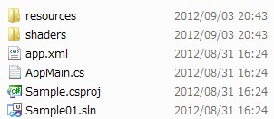

Using the creation of a simple 2D shooting game, this document explains the basic mechanisms of a game application and the development methods with PSM SDK.
Contents
First, try executing the smallest PSM program.
Start PSM Studio, and open the Sample/Tutorial folder with [File] - [Open..].
Sample/Tutorial is installed in the following location by default.
- Windows XP: "C:/Documents and Settings/All Users/Documents/Psm/"
- Windows 7: "C:/Users/Public/Documents/Psm/"
sample/Tutorial/Sample01

The files with the sln extension are called solution files. They describe the structures of project files.
The files with the csproj extension are called project files. They describe the structures of source code (cs files) and the building method.
The content of the Sample01 folder for constructing applications is called a "Project".
Note: Please be aware that "Project File csproj" and "Project" have different meanings.

Figure 1 Structure Relationship Between Solution Files and Project Files
A solution file is the starting point of a project; open this file when starting development of an application.
Once the solution file is open, build and press the F5 key to execute.
Congratulations! However, only a black screen will show for this program, nothing else will happen. Click the x button in the upper right of the window or press Shift+F5 in PSM Studio to exit the program.
First, look at the source code. To look at the source code, double click on AppMain.cs in "Solution Explorer" on the left side.
public class AppMain { static protected GraphicsContext graphics; public static void Main (string[] args) { Initialize (); while (true) { SystemEvents.CheckEvents(); Update (); Render (); } } public static void Initialize () { graphics = new GraphicsContext(); } public static void Update () { } public static void Render () { graphics.Clear(); graphics.SwapBuffers(); } }
Here, note Main(), Initialize(), SystemEvents.CheckEvents(), Update(), Render(), and SwapBuffers().
Main()
Initialize()
while
Next, a loop is entered with "while". In other words, the SystemEvents.CheckEvents(), Update(), and Render() processing is repeated inside.
SystemEvents.CheckEvents()
- The OS dependent events will be checked with SystemEvents.CheckEvents(). An Android device, for example, will detect an event here where an application is minimized, etc. Window message processing, etc in Windows will be detected here.
Update()
- The calculation processing, etc. handled by the CPU is mainly described in Update().
Render()
- The render processing and calculation processing, etc. handled by the GPU is mainly described in Render(). In Render(), the frame buffers are first cleared with graphics.Clear().
SwapBuffers()
- SwapBuffers() switches the frame buffers with the vertical synchronization timing.
"The frame buffers will be switched with the vertical synchronization timing" (described above) will be further explained here.
To make it easier to understand how the program operates, we will change the program as follows. <-sections added.
public class AppMain { static protected GraphicsContext graphics; static int colorValue=0; //<- here. public static void Main (string[] args) { Initialize (); while (true) { SystemEvents.CheckEvents (); Update (); Render (); } } public static void Initialize () { graphics = new GraphicsContext(); } public static void Update () { colorValue++; //<- here. if(colorValue>255) //<- here. colorValue=0; //<- here. graphics.SetClearColor(colorValue, colorValue, colorValue, 255);//<- here. } public static void Render () { graphics.Clear(); graphics.SwapBuffers(); } }
When this program is executed, the screen background color becomes more and more white, then switches to black again.
graphics.SetClearColor(int r, int g, int b, int a) clears the screen with the colors passed in the argument.
r=255, g=255, b=255 is white.
"a" is called alpha and indicates the transparency level. 0 is completely transparent, and 255 is completely opaque.
So you can see that colorValue++; is processed over and over again.
On the simulator, this value is updated 60 times a second, in other words it is updated once every 16.6 milliseconds.
The following diagram illustrates the process flow.

The area for the video memory shown in the display is called a frame buffer.
In general, game applications have two image areas that are shown on the screen. This is called a double buffer.
The rendering flow uses the following procedure.
- First the back area (back) will be cleared with r=1, g=1, b=1 (the preceding diagram has been adjusted to white to be easily understandable).
- It waits for 16 milliseconds after rendering completes.
- When 16 milliseconds have elapsed, the area cleared with r=1, g=1, b=1 is moved to the front (front).
- Now, the area in the back will be cleared with r=2, g=2, b=2.
- It waits for 16 milliseconds after rendering completes.
- When 16 milliseconds have elapsed, the area cleared with r=2, g=2, b=2 is moved to the front (front).
The program runs while this processing repeats.
Switching areas and showing avoids a scrambled screen in the middle of rendering.
Matching the timing of the screen switch to when the display is refreshed is called "Waiting for (matching) vertical synchronization of the screen".
Because the timing at which the display is refreshed is approximately 16.6 milliseconds (Note 1), the timing at which the frame buffer is switched is matched to this value.
The location for this series of processing is SwapBuffers().
The single panel while waiting for SwapBuffers() to switch the screen is called 1 frame.
"fps" (Frames Per Second) is used as a unit for indicating the number of times that the frame is refreshed in a second. When the frame is refreshed 60 times a second, it is written as 60fps.
(Note 1) Note that on some Android devices, the rate is not 60fps.
Since similar terms have appeared, we will explain the terms in order to avoid confusion.
The processing and terms explained in this chapter will also appear in the following chapters, so be sure to remember them.